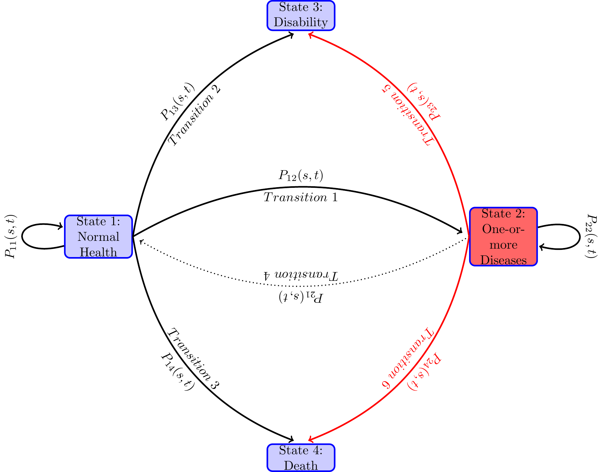
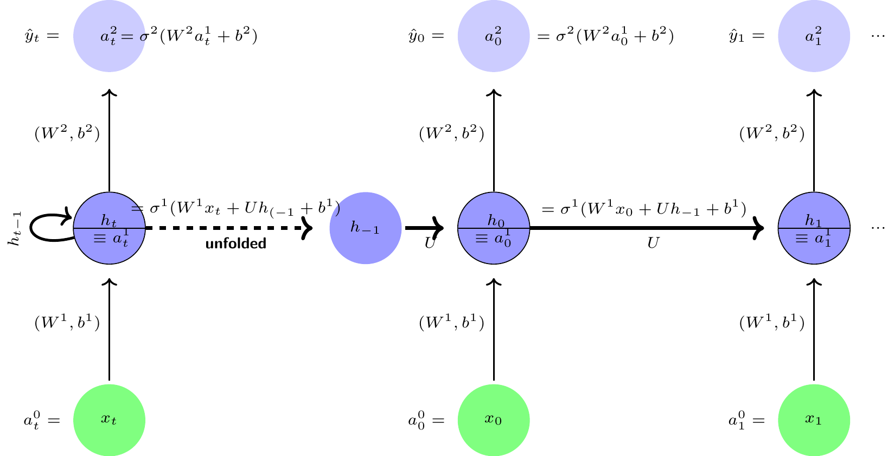
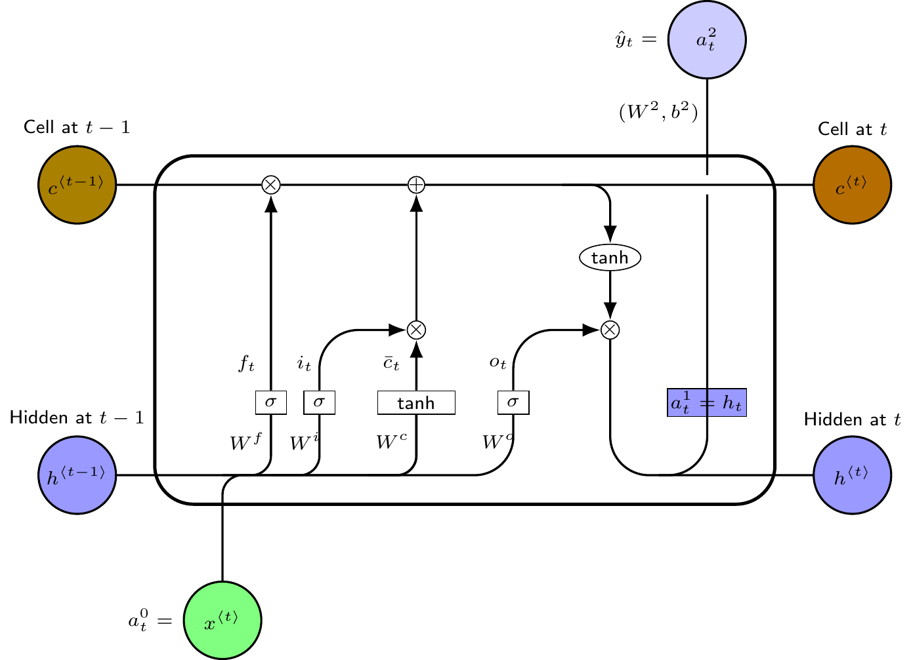

1 Introduction
The path through various health outcomes such as serious diseases, disability and death develop sequentially over one’s life span. Many factors such as genetic and epigenetic factors, and health related behaviors throughout one’s life condition those health outcomes. Some individuals develop one or more diseases and their health deteriorate faster, worsening their quality of lives and survival probabilities, while others have slower aging process. The biology of aging process determines how those factors affect aging at the cellular level. In this paper, with insights from the biology literature, I use statistical and neural network models for predicting and estimating the transition probabilities between health states and the times they spend in a health state before transiting to another health state for individuals in their mid ages. While the framework I develop in the paper is applicable to many other heath outcomes such as incidence of cardiovascular and immune diseases, I focus on one health outcome of interest—any of the disabilities that qualifies for a public disability insurance program—with death as a competing risk health outcome. Death is a competing risk heath outcome in the sense that once dead, one cannot be at risk of disability, or as a matter of fact, any other health outcome of interest.
The main issues I address in this paper are: What kind of aging process and what conditioning factors for it the biology literature recommends? Which type of model—a multistate statistical model, a feedforward multilayer perceptron (MLP) type of neural network model, or a long short memory (LSTM) recurrent neural network (RNN) model—that is better suited for prediction and estimation of transition probabilities among health states, taking into account the effect of various covariates (the conditioning factors)? Which model can estimate the effect of various conditioning factors and their relative importance on the type of health trajectory one follows?
I will not get into the details of the biomedical literature on these issues. Here I will point out the main insights from my reviews elsewhere, (Raut 2019a, 2019b). Similar to the literature of behavioral genetics of personality and intelligence, the nature-nurture controversy exists in the health literature: Is it all nature (i.e., all genetics or genome) or is it all nurture (i.e., all epigenetics or epigenome modulated by the environment and health related individual behaviors) that determines the progression of health over the life span of an individual? The consensus so far is that it is neither the nature nor the nurture, it is a combination of the two that determines health developments over one’s life-span. The research so far found that certain genetic make-ups (i.e., certain sequences of DNA) predispose one to certain diseases, ((Barondes 1999; Khoury et al. 2009; Bookman et al. 2011)), but the epigenetic inputs—especially at the very early stage of life, i.e. in the womb, but not the least at later stages of life—are also very important determinants of life expectancy and quality of life. The biomedical research so far has not found genes that are responsible for aging and age related diseases, leading to early disability and mortality. The twenty-first century biomedical research emphasizes more on the epigenetic factors than the genetic factors to explain the pattern of health developments over the life-span.
At the cellular level, aging means cellular senescence—i.e., after a certain number of cell divisions, it stops dividing or have defective replications, causing tissues or organs to increasingly deteriorate over time. Senescence leads to incidence of degenerative diseases. It is generally observed that women live longer than men and those with better life styles in terms of smoking, exercising and diets delay the aging process (for evidence, see (Blair et al. 1989; Vaupel 2010; Austad and Fischer 2016; Zarulli et al. 2018)). This line of biological inquiry led to explore the (cellular) molecular mechanism of aging process and to find biomarkers of aging that can be used to diagnose, monitor, and improve the age related physiological decline and disease. A good indicator of the aging process at the cellular level is the rate of decay in the telomere length. Telomeres are the caps at the end of chromosomes in a DNA sequence. They look like the plastic caps at the end of shoelaces. The main function of telomeres is to protect cells preserving the genetic content within each chromosome during cell divisions. Unfortunately, the telomere length shortens in the course of each cycle of chromosomal replication during cell division, reaching the Hayflick limit (about 40 to 60 cell divisions, Hayflick (1965)) with a critically short telomere length, after which the cells stop dividing or divide with chromosomal abnormalities. The rate of shortening of the telomere length is modulated by telomerase enzyme. Why the rate of decay in telomere length varies for individuals is an active area of biomedical research and the mechanism for it is not yet fully understood. Many studies find that higher stress of any kind— psychological, financial, social and chemical—is strongly associated with higher oxidative stress, lower level of telomerase enzyme, and shorter telomere length. Furthermore, shorter telomere length is associated with health related phenotypes of poorer health and higher risks for cardiovascular and immune diseases (see, (Epel et al. 2004; Shalev et al. 2013; DiLoreto and Murphy 2015; Shalev and Belsky 2016; Simons et al. 2016)).
More recently emerged second line of biomedical research on aging and aging related diseases explores the epigenetic (which literally means on top of genetic) mechanism for these life-cycle processes. (See for instance, (Alisch et al. 2012; Barres and Zierath 2011; Boks et al. 2009; Esteller 2008; Hannum et al. 2013; Horvath 2013)).
The above literature emphasizes that aging and age related diseases are associated with shortening of telomere length and changes in global methylation, and that stress, smoking, drinking, chemical misuse, physical exercising, and diet are important modulators for these changes. The question remains, what are the critical periods or the developmental milestones in life-cycle that program the motions of health developments over the life-span of an individual?
Research along this line began with the striking findings of (Barker 1990, 1998) and later of Gluckman et al. (2008). They found strong associations between birth weight and many later life chronic diseases, including hypertension, coronary artery disease, type 2 diabetes, and osteoporosis. Many other studies find that much of health developments in later life is determined very early in life, during the prenatal period right after conception, i.e. in the womb. Sometimes it is said in social sciences that inequality begins in the womb. The effect of an environmental stress in the womb on later life diseases and developmental outcomes is known as programming. Gluckman et al. (2008) observes that ``like the long latency period between an environmental trigger and the onset of certain cancers, the etiology of many later life diseases such as cardiovascular disease, metabolic disease, or osteoporosis originate as early as in the intrauterine development and the influence of environments that created by the mother.’’ For more empirical evidence for the developmental origin of later life diseases, see (Barker 2007; Thornburg et al. 2010). The papres by (Kanherkar, Bhatia-Dey, and Csoka 2014; Barbara, Abdilla, and Calleja-Agius 2017) provide detailed descriptions of the biological process of development of life and health, starting from conception. They explain how the global DNA demethylation of the fertilized egg right after conception creates an epigenetic “clean slate” to start a new life, followed by rapid remythylation to reprogram the maternal and paternal genomes to create epigenetic configurations in the fetus which rapidly produce specialized cells of the body with cell divisions. The environment provided in mother’s womb during those times has long-term effects on the child’s later cognitive and other health developments. While inputs at early milestone ages are important for later age health, healthy living and good healthcare are still important for maintaining health in mid ages.
Studies in social sciences find that low socio-economic status (SES) are associated with inflammation, metabolic dysregulation, and various chronic and age-related diseases such as type 2 diabetes, coronary heart disease, stroke, and dementia, and that low SES create epigenetic changes in individuals that lead to faster biological aging even after controlling for health-related behaviors such as diet, exercise, smoking, alcohol consumption, or having health insurance, see for evidence, Simons et al. (2016). The study by Karakus and Patton (2011) uses the Health and Retirement Study data and after controlling for education, race, income, health risk indicators like BMI and smoking, functional limitations like gross motor index, health limitations for work, and income, they find depression at baseline leads to significantly higher risk for developing diabetes, heart problems, and arthritis and no significant effect on developing cancer during the 12 years follow-up period. Renna (2008) uses National Longitudinal Survey of Youth data to find no significant effect of alchohol use on labor market outcomes such as on earnings or hours of work. Seib et al. (2014) collected data on a sample of older women in Australia and found that severe traumatic life events create strong stress levels that influence them to have unhealthy living and diet measured by BMI and develop stronger and earlier health problems. Conti, Berndt, and Frank (2009) utilize the CES-D data in the Health and Retirement Study dataset to construct a measure of depression, and find that depression of men and women have significant negative effect on employment status, early retirement, and application for DI/SSI benefits.
Using insights from the above literature, I formulate a finite state continuous time stochastic process model of disablement process. I postulate that as individuals age, the homeostatic regulatory mechanism that controls physiological systems—respiratory, cardiovascular, neuroendocrine, immune, and metabolic—becomes more and more fragile in its ability to face internal and external stressors, leading to early occurrence of disease, disability and death. I use available bio-markers (such as BMI, CES-D, cognition) and health related behaviors such as smoking, and vigorous exercising along the life-course to explain how they affect the risk of chronic diseases, disabilities and death.
A multistate stochastic process framework is useful to study the effects of various covariates—the covariates that may be different for different intermediate health states—on the risks of disability and death.
The statistical models for estimation of transition probabilities are based on Markov processes and assume that transition intensities of these processes have Cox proportional hazard specifications, see for instance ((Aalen and Johansen 1978; Andersen et al. 1993; Andersen and Perme 2008; Crowther and Lambert 2017; Fleming 1978)). Markov models have short memories and proportionality assumption imposes serious limitations on the structure of the model, which could be far from the functional form of the true data generating process. Neural network models relax these limitations.
It is known that a feedforward multilayer perceptron (MLP), also known as a feedforward deep learning model, with a sufficient number of neurons in the hidden layer can approximate any function as closely as desired. That is, an MLP is one of the best `universal function approximator’ (Hornik, Stinchcombe, and White (1989)). A few papers—(Faraggi and Simon 1995; Biganzoli et al. 1998; Katzman et al. 2018; Lee et al. 2018; Ranganath et al. 2016)– used feedforward MLP networks to compute the survival probabilities when there is only one possible transition between two health states—alive and death– with the exception of Lee et al. (2018) who studied competing risks, by breaking death into various causes of death. Katzman et al. (2018) introduced more general non-linearity of of the covariate effects, but still kept the Cox proportionality assumption. Ranganath et al. (2016) assumed parametric form for the baseline hazard function as compared to the non-parametric form in Cox model, but they made the covariate effects nonlinear. Ren et al. (2019) consider a recurrent neural network, but the covariates are time-fixed at the initial time step. They also restricted to only one transition, i.e., a two-state model. None of these models deals with sequential framework where new information arise with time steps and update the previously estimated transition probability estimates. In these models, all the inputs from the past, present and the future times in the sample determine current probabilities. These models, with the exception of Ren et al. (2019) although with other serious limitations, have no ways to store information learned from the past inputs. After training these models, when new data arrive, these models cannot use this new data to update the predicted probabilities without losing information in the early periods.
A recurrent neural network (RNN) uses feedback connections or self connection of neurons in the hidden layer, and thus is capable of storing important information learned in the past in these recurrent neurons. Like an MLP is a universal function approximator, an RNN has the similar nice property that with sufficiently large number of hidden recurrent neurons, an RNN can approximate any sequence-to-sequence mapping ((Graves, Wayne, and Danihelka 2014; Hammer 2000; Siegelmann and Sontag 1992)). These models have shared weights between time-steps and in the input and output layers, as a result when new data arrive after training the model, it can use all the past important information learned from the past to this new data point and predict the future probabilities in the light of this new data. Since training such models involve computation of gradients using backpropagation through time, it involves multiplication of numbers less than one many times, leading to vanishing gradient problem. In these scenarios, it cannot keep useful information in memory from the long time back. Overcoming these problems led to a few modifications of the RNN framework. The most successful of them is the long short memory (LSTM) RNN model introduced by Hochreiter and Schmidhuber (1997). For more on LSTM-RNN models, see Graves (2012). I use this LSTM-RNN model for prediction of time-to-event probabilies of health outcomes. Another problem is with the training data size. To obtain good predictive performance, these models require a large number of training examples. In drug discovery problems or with surveys or lab experiements, obtaining large number of examples is costly. To overcome small data problem, (Altae-Tran 2016; Altae-Tran et al. 2017) introduced further refinement of the LSTM-RNN framework. I do not adopt such modifications. In this paper, I use the original LSTM-RNN model specified in Graves (2012) and implemented in Keras module of Tensorflow 2.0 for Python package.
The rest of the paper is organized as follows. In Section 2, I describe the econometric specification of the maultistate stochastic process and describe estimation issues. In Section 3, I describe the Health and Retirement Study data set and the variables that I use in estimation in both frameworks. In Section 4, I describe the recurrent neural network with LSTM memory cells that I use to extend the multistate Cox model of health outcomes process. In Section 5, I describe the performance criteria that I use to compare the performance of the models used in this study. Section 6 concludes the paper.
2 Statistical multi-state model of health outcomes process
The goal is to formulate and then estimate an econometric model of paths to enter disability rolls. An individual can be on the disability rolls if the individual has a qualifying disability before reaching age 65 and has not died before applying for disability benefits. I assume that an individual’s getting on the disability rolls is a terminal event, i.e., the individual does not move to normal or diseased health states. After reaching this state, the individual is not followed any further. A competing risk for getting on the rolls is death before age 65. This is a competing risk because an individual cannot be at risk for disability enrollment if the individual is already dead and thus not at risk to get on the disability rolls. The individual is not followed after the event of death because our primary interest is the event of getting on to the disability roll. In the technical terms defined below, we treat the health states—disability and death—as absorbing states, i.e., once in that health state, an individual remains in that health state and removed from the sample for later considerations. An individual can be in normal health and then become disable or die before becoming disabled or may first become diseased with one or more diseases and again from that health state become disabled or die before becoming disabled. Various factors affect individual risks of various transitions of health states and the time they stay in each health state along the life-span. Both, in turn, determine the timing of getting on to the disability rolls.
I model the paths through various health states that individuals follow along their life-spans as a continuous-time finite-state Markov process {X(t)},t \in T, where at each time point t during the study period T, the random variable X(t) takes a value from a finite number of health states in S. In the present study, we take T=\left[0,7\right], treating age 51 as time period t=0 and age 65 as time period t=7. The unit of time is 2 years, as HRS collected data every two years. The state space S contains states, 1= “healthy or normal health”, 2= “ill with one or more chronic disease”, 3= “disabled with DI-or SSI-qualifying disability” and 4= “Death”. Sometimes I will use S=\{h, i, d, D\} in place of \{1,2,3,4\}.
Typically in the study period, an individual along the path to disability or death before age 65 may be in the normal health state for a length of time, and then moves to another health state, say diseased health state, and remain there for some time, and then jump to the health state of disability or to death, or reach 65 and censored. There are many possible paths that an individual can follow. Even when the health states they pass through are the same, the duration of stay in each health state (also known as the waiting time in stochastic process literature) could vary. Each configuration of visited states and the waiting times in those states constitute one path. When time is continuous, an uncountably large number of paths are possible. From the diagram below one can see various paths that an individual may follow during the study period. The focus of the paper is to study the probabilities of various transitions and the duration of stay in each health state.
Let the transition probabilities of our Markov process X\left( t\right) be given by P_{hj}(s,t)=Prob(X(t)=j X(s)=h), \tag{1}
for all h,j\in S, and s,t\in T, s\leq t. Denote the matrix of transition probabilities by P\left( s,t\right) \equiv \left( P_{hj}(s,t)\right) _{h,j=1...p}.
An individual may be in any of the health states in S at time t, the probability of which, known as the occupation probability, depends on the occupation of the previous health states. and the transition probabilities among health states. Let \pi _{j}(t) be the occupation probability of an individual in health state j at time t. Occupation probability can be also viewed as the proportion of population of age t who are in health state j. Denote all the occupation probabilities as a column vector \pi (t)\equiv (\pi _{j})(t),j\in S. Then the occupation probabilities move over time recursively as follows,
\pi (t)=\pi ^{\prime }(s)P(s,t),0\leq s<t.
The goal is to estimate for each time time s,s\in T the transition probability matrices P(s,t),t>s, t\in T, taking into account the effects of (i.e., conditioning on) the past materialized values of the determining factors, that is covariates, and the stochastic process X(.) up to time s.
It is known that the transition probabilities of a Markov process satisfies the Chapman-Kolmogorov equation
P\left( s,t\right) =P\left( s,u\right) \cdot P\left( u,t\right) ,\text{ for all }s,u,t\in T\text{ with }s<u<t \tag{2}
I will use the above to point out how the transition probabilities are parameterized and statistically estimated by the Aalen-Johnson non-parametric estimation method that plugs in the Nelson-Aalen estimates of the integrates hazards for each transition separately in an unified way for both continuous time and discrete time Markov processes.
I assume that the transition probabilities P\left(s,t\right),s,t \in T, s<t are absolutely continuous in s and t. A transition intensity— also known as the hazard rate in the survival analysis literature when there is only one possible transition (alive to death), and as the cause-specific hazard rate in the competing risk analysis when death is split into various causes of death1 —of the health process X_{t} from health state h to health state j at time t is the derivative
\begin{aligned} \lambda _{hj}(t) &=\lim_{\Delta t\rightarrow 0}\frac{P_{hj}(t,t+\Delta t)-P_{hj}\left( t,t\right) }{\Delta t},\text{for }j\in S,\text{ which for } j\neq h\text{ becomes} \nonumber \\ &=\lim_{\Delta t\rightarrow 0}\frac{P_{hj}(t,t+\Delta t)}{\Delta t},\text{ and for }j=h\text{ becomes} \nonumber \\ \lambda _{hh}(t) &=\lim_{\Delta t\rightarrow 0}\frac{P_{hh}(t,t+\Delta t)-1 }{\Delta t} \\ &=-\lim_{\Delta t\rightarrow 0}\frac{\sum_{j\neq h}P_{hj}(t,t+\Delta t)}{ \Delta t} \nonumber \\ &=-\sum_{j\neq h}\lambda _{hj}\left( t\right) \nonumber \end{aligned} \tag{3}
For absorbing states h=3,4, the transition intensities \lambda _{hj}(t)=0 , for all j,j\in S. Denote the matrix of transition intensities by
\Gamma \left( t\right) =\left( \begin{array}{cccc} -\left( \lambda _{12}\left( t\right) +\lambda _{13}\left( t\right) +\lambda _{14}\left( t\right) \right) & \lambda _{12}\left( t\right) & \lambda _{13}\left( t\right) & \lambda _{14}\left( t\right) \\ 0 & -\left( \lambda _{23}\left( t\right) +\lambda _{24}\left( t\right) \right) & \lambda _{23}\left( t\right) & \lambda _{24}\left( t\right) \\ 0 & 0 & 0 & 0 \\ 0 & 0 & 0 & 0 \end{array} \right) . \tag{4}
Every Markov stochastic process has an associated intensity process. In the theory of stochastic processes, it is known that given an intensity function \Gamma \left(t\right), there exists a continuous time Markov chain satisfying the Chapman-Kolmogorov Equation 2 and conversely, given a Markov chain with transition probabilities P\left( s,t\right) ,s,t\in T,s<t, that satisfies the Chapman-Kolmogorov Equation 2, one can derive the transition intensities of the form in Equation 4. For this reason, the intensity function \Gamma \left( t\right) is also referred as infinitesimal generator of the Markov process. While P_{hj}(s,t) is an unconditional probability, the transition intensity or the hazard rate \lambda _{hj}(t)\Delta t is the conditional (instantaneous) probability. More specifically, \lambda _{hj}(t)\Delta t is the probability that an individual experiencing event j in a very small interval of time [t,t+\Delta t) given that he has been in state h at time t. This conditional probability may depend on time t and other characteristics up to time t.
In statistical and neural network models, the dependence of transition probabilities on individual characteristics is generally done through parametric or semi-parametric specification of the transition intensity functions \Gamma \left( t\right). One then estimates the transition probabilities from the non-parametric or semi-parametric estimates of the integrated transition functions. An integrated transition intensity function \Lambda _{hj}\left(t\right) for a transition h \to j is defined by \Lambda _{hj}\left(t\right) =\int_{0}^{t}\lambda _{hj}\left( u\right) du. Just like for a continuous random variable, it is easier to estimate its cumulative density function nonparametrically than its density function, for the time-to-event data with censoring, it is easier to estimate the integrated hazard function than the intensity function. While for the discrete case this problem does not arise, estimation of transition probabilities via nonparametric estimates of the integrated hazard function is an unified approach encompassing both discrete time and continuous time data. I follow this strategy.
To explain and gain insights into this estimation strategy, denote the matrix of all the cumulative hazard functions as \Lambda \left(t\right) =\left( \Lambda _{hj}\left(t\right) \right) _{h,j=1,2,3,4}, and the matrix of the derivatives of the component functions by d\Lambda \left( t\right). Let the time interval [s,t] is subdivided into a partition of m sub-intervals with cut-off points s=t_{0}<t_{1}<...<t_{m}=t. Denote the partition by P(m). Denote the largest size of the sub-intervals by |P(m)|\equiv \max \{|t_{i}-t_{i-1}|,i=1,...,m\}. Applying repeatedly the Chapman-Kolmogorov equation on the sub-intervals of the partition, we have
P(s,t)=P(t_{0},t_{1})\cdot P(t_{1},t_{2})\cdot ...\cdot P(t_{m-1},t_{m})=\prod_{i=1}^{m}P(t_{i-1},t_{i}) \tag{5}
Note that as |t_{i-1}-t_{i}|\rightarrow 0, the transition probability matrix P(t_{i-1},t_{i})\rightarrow P(t_{i-1},(t_{i-1}+dt)=I+\Gamma (t)dt.2 As |P(m)|\rightarrow 0, the right hand side of converges to a matrix, known as the the product integral3 of the integrated hazard functions \Lambda (s,t), denoted as \prod_{s}^{t}\left( I+d\Lambda \left( u\right) \right). Or in other words, the transition probabilities of a stochastic process parameterized via an intensity process is given by the product integral of integrated hazard function.
P\left( s,t\right) =\prod_{s}^{t}\left( I+d\Lambda \left( u\right) \right) . \tag{6}
The above product-integral solution is a generalization of the Kaplan-Meier (Kaplan and Meier (1958)) product-limit formula for the survival function in survival analysis. The product integral formula unifies both discrete time and continuous time Markov processes, and is an extremely useful apparatus for statistical analysis of Markov processes.
The most widely used statistical procedure to estimate the transition probabilities P(s,t), s,t\in T,s<t is to plug in an estimate \Lambda\left( u\right) in Equation 6. The effect of covariates is incorporated by conditioning the transition intensity functions \Gamma (t;X(t)) on the covariates process X(t). There are many ways to get these estimates. I will follow two approaches in this paper: First, I will explore the more widely used non-parametric Aalen-Johnson-Fleming method via Nelson Aalen estimates for each-component of the \hat{\Lambda}\left( u;X\left( u\right) \right) with Cox proportional hazard model to incorporate the time-varying covariate effects in the next sub-section. Second, the Neural network approach explored in a later section.
2.1 Aalen-Johansen Estimator of Transition Probabilities
Most widely used statistical procedure incorporates the time-varying covariates for the transition probabilities by specifying a semi-parametric functional forms for the intensity hazard functions
\lambda _{hj}\left( t;X\left( t\right) \right) =\lambda _{hj}^{0}\left( t\right) e^{\beta _{hj}^{\prime }X\left( t\right) } \tag{7}
\lambda _{hj}^{0}\left( t\right) is known as the baseline hazard function. The specification of transition intensity in Equation 7 is known as the proportional hazard model. It aggregates the effects the regressors linearly as a measure of some kind of latent factor, and that latent factor shifts the baseline hazard proportionately, i.e., the effect on hazard is uniform over time. Two papers — Fleming (1978) and Aalen and Johansen (1978) — independently extended the Kaplan-Meier nonparametric product limit estimator from survival analysis to the multi-state time to event models. While Fleming (1978) gave the estimator for complete data, Aalen and Johansen (1978) gave the estimator for censored data. To describe the Aalen-Johansen estimator, let me introduce some concepts and notation. For each individual i,i=1,2,...,n and corresponding to each transient health state, h,h=1,2, define two types of stochastic processes: (1) the counting processes N_{hj,i}(t) denoting the observed number of transitions from health state h to health state j that the individual i has made by time t—which in our case is either 0 or 1, since by assumption when an individual exits a health state, the individual does not return to it in future ; and (2) Y_{h,i}(t), taking value 1 if individual i is at risk at time t for transition to another possible health state, and taking value 0 otherwise.
Let us focus on one transition h\rightarrow j. Denote by \bar{N} _{hj}(t)=\sum_{i}^{n}N_{hj,i}(t), a counting process measuring the number of transitions of the h\rightarrow j in the sample at time t, \bar{Y} _{h}(t)=\sum_{i}^{n}Y_{h,i}(t), a counting process measuring the number of individuals in the sample at risk for a transition at time t, and \bar{M} _{hj}(t)=\sum_{i}^{n}M_{hj,i}(t). In any empirical study the data will be at the discrete times, say in ordered times 0=t_{0}<t_{1}<...<t_{m}. At each time t_{i}, we calculate
\hat{\lambda}_{hj}\left( t_{i}\right) =\frac{\triangle \bar{N}_{hj}\left( t_{i}\right) }{\bar{Y}_{h}\left( t_{i}\right) },j\neq h, \tag{8}
Without covariates, the Nelson-Aalen non-parametric estimate of the integrated intensity functions is given by, for each h=1,2
\begin{aligned} \hat{\Lambda}_{hj}\left( t\right) &=\sum_{i:t_{i}\leq t}\hat{\lambda} _{hj}\left( t_{i}\right) ,j\neq h, \nonumber \\ \hat{\Lambda}_{hh}\left( t\right) &=-\sum \hat{\Lambda}_{hj}\left( t\right) \\ \hat{\Lambda}_{hj}\left( t\right) &=0\text{ for all other }h,j\text{ combinations} \nonumber \end{aligned} \tag{9}
The Aalen-Johansen estimator \hat{P}(s,t),s,t,\in T,s<t for the transition probabilities is obtained by substituting for each component hj the Nelson-Aalen estimates \hat{\Lambda}_{hj}(t) and then applying the product integral formula Equation 6 as follows
\hat{P}\left( s,t\right) =\prod\limits_{s<u<t}\left( I+d\hat{\Lambda}\left( u\right) \right) =\prod\limits_{i:t_{i}\leq t}\left( I+\left[ \hat{\Lambda} \left( t_{i}\right) -\hat{\Lambda}\left( t_{i-1}\right) \right] \right) . \tag{10}
With covariates one obtains the Cox partial likelihood estimate for \hat\beta_{hj} for each transition h\rightarrow j separately and then computes an weighted risk set defined by
\bar{Y}_{hj}^{\ast }(t)=\sum_{i=1}^{n}Y_{hj,i}\left( t\right) \exp \left( \hat{\beta}_{hj}^{\prime }X_{h,i}^{0}\right) . \tag{11}
The estimates of cumulative intensities with covariates are obtained from Equation 8 by replacing, \bar{Y}_{h}(t) with \bar{Y}_{hj}^{\ast }(t).
Nelson-Aalen estimator has nice statistical property. For instance, using Martingale calculus, it can be shown that the estimator is asymptotically unbiased. Using the results from Martingale theory, one can derive the formula for variance-covariance estimates of parameter estimates and the normalized estimate is normally distributed (central limit theorem holds for normalized parameter estimates), see for details, (Aalen, Borgan, and Gjessing 2008; Andersen et al. 1993; Fleming and Harrington 2005).
The likelihood of the sample (for details, see (Andersen et al. 1993; Andersen and Perme 2008; Commenges 2002)),
\begin{split} L\left( \theta \right) &=\prod\limits_{i}\prod\limits_{{h=1,2;~}{ {j=2,3,4;~}{h\neq j}}}\left( \prod\limits_{t}\lambda _{hj,i}\left( t X_{h,i}\right) ^{\triangle N_{hj,i}\left( t\right) }\right) \\ & \exp \left( -\int_{0}^{T_{h,i}^{\ast }}\lambda _{hj,i}\left( u X_{h,i}\right) \right) du \end{split} \tag{12}
I will use this likelihood function in construction of the log-likelihood loss function for the neural network models.
I use the R package, mstate, developed and described by the authors in Wreede, Fiocco, and Putter (2010) for the estimation of the parameters and their standard errors?
The Aalen-Johnson nonparametric estimates without any covariates of the transition probabilities, are shown in Table 2 and plotted in Figure 2.
For the Cox regression parameter estimates, I have used both the R package mstate (see, Wreede, Fiocco, and Putter (2010) for details) and also used the SAS procedure phreg (both produced the same estimates) and used the mstate package to estimate all the transition probabilities (SAS does not have readily available procedure for this purpose). The parameter estimates are shown in Table 3 and Table 4.
3 The data set and the variables
I use the Health and Retirement Study (HRS) dataset for empirical analysis. A lot has been reported on the family of HRS datasets—about its structure, purpose, and various modules collecting data on genetics, biomarkers, cognitive functioning, and more, see for instance (Juster and Suzman 1995; Sonnega et al. 2014; Fisher and Ryan 2017). The first survey was conducted in 1992 on a representative sample of individuals living in households i.e., in non-institutionalized, community dwelling, in the United States from the population of cohort born during 1931 to 1941 and their spouses of any age. ``The sample was drawn at the household financial unit level using a multistage, national area-clustered probability sample frame. An oversample of Blacks, Hispanics (primarily Mexican Americans), and Florida residents was drawn to increase the sample size of Blacks and Hispanics as well as those who reside in the state of Florida’’, Fisher and Ryan (2017). The number of respondents were 13,593. Since 1992, the survey were repeated every two years, each is referred to as a wave of survey. New cohorts were added in 1993, 1998, 2004 and 2010, ending the survey up with the sample size of 37,495 from around 23,000 households in wave 12 in 2014. RAND created many variables from the original HRS data for ease of use. I create my dataset and all the variables with a few exceptions mentioned below from the RAND HRS dataset version P. The details of the Rand HRS version P can be found in Bugliari et al. (2016).
As mentioned in the introduction, I define the disability health state to be one that qualifies one to be on the disability programs OASDI or SSI. The data on disability is self-reported. Later I plan to use the Social Security Administration’s matched administrative data on this variable and earnings variables not included here. The matched data will, however, reduce the sample size to half, as only 50 percent of the respondents are used for matching HRS with SSA Administrative data. The HRS data collected information on if and when the doctor diagnosed that the respondent has any of the severe diseases such as high blood pressure, diabetes, cancer, lung disease, heart attack, stroke, psychiatric disorder and severe arthritis. I drop respondents who received disability before the first survey year 1992 and I also drop the spouses in the sample who were not born between 1931 to 1941, that is the respondents in our sample are between age 51 to 61 and not disabled or dead in 1992. I ended up with the final sample size of 9,493 for this analysis.
Table 1 provides a few characteristics of the data.
| Survey Year | Alive:normal health | Alive: diseased | Became disabled | Died before disability | 65+: censored | Total |
|---|---|---|---|---|---|---|
| 1992 | 3026 | 6483 | 92 | 0 | 0 | 9601 |
| 1994 | 2591 | 6608 | 166 | 144 | 0 | 9509 |
| 1996 | 2291 | 6623 | 139 | 146 | 0 | 9199 |
| 1998 | 1726 | 5478 | 134 | 123 | 727 | 8188 |
| 2000 | 1279 | 4313 | 86 | 113 | 741 | 6532 |
| 2002 | 848 | 3148 | 54 | 58 | 759 | 4867 |
| 2004 | 468 | 1893 | 34 | 48 | 781 | 3224 |
| 2006 | 132 | 636 | 4 | 14 | 795 | 1581 |
3.1 Variables
The demographic variables White and Female have the standard definition. The variable College is a binary variable taking value 1 if the respondent has education level of college and above (does not include some college), i.e., has a college degree and more and taking value 0 otherwise.
cesd: I used a score on the Center for Epidemiologic Studies Depression (CESD) measure in various waves that is created by RAND release of the HRS data. RAND creates the score as the sum of five negative indicators minus two positive indicators. ``The negative indicators measure whether the Respondent experienced the following sentiments all or most of the time: depression, everything is an effort, sleep is restless, felt alone, felt sad, and could not get going. The positive indicators measure whether the Respondent felt happy and enjoyed life, all or most of the time.’’ I standardize this score by subtracting 4 and dividing 8 to the RAND measure. The wave 1 had different set of questions so it was not reported in RAND HRS. I imputed it to be the first non-missing future CESD score. In the paper, I refer the variable as cesd. Steffick (2000) discusses its validity as a measure of stress and depression.
cogtot: This variable is a measure of cognitive functioning. RAND combined the original HRS scores on cognitive function measure which includes “immediate and delayed word recall, the serial 7s test, counting backwards, naming tasks (e.g., date-naming), and vocabulary questions”. Three of the original HRS cognition summary indices—two indices of scores on 20 and 40 words recall and third is score on the mental status index which is sum of scores “from counting, naming, and vocabulary tasks” — are added together to create this variable. Again due to non-compatibility with the rest of the waves, the score in the first wave was not reported in the RAND HRS. I have imputed it by taking the first future non-missing value of this variable.
bmi: The variable body-mass-index (BMI) is the standard measure used in the medical field and HRS collected data on this for all individuals. If it is missing in 1992, I impute it with the first future non-missing value for the variable.
behav_smoke: This variable is constructed to be a binary variable taking value 1 if the respondent has reported yes to ever smoked question during any of the waves as reported in the RAND HRS data and then repeated the value for all the years.
behav_vigex: The RAND HRS has data on whether the respondent did vigorous exercise three or more days per week. I created this variable in each time period to take the value 1 if the respondent did vigorous exercise three or more days per week.
3.2 Statistical Results
| Duration | 1 \to 1 | 2 \to 2 | 1 \to 2 | 1 \to 3 | 2 \to 3 | 1 \to 4 | 2 \to 4 |
|---|---|---|---|---|---|---|---|
| 0 | 1.0000 | 1.0000 | 0.0000 | 0.0000 | 0.0000 | 0.0000 | 0.0000 |
| 1 | 0.8711 | 1.0000 | 0.1289 | 0.0000 | 0.0000 | 0.0000 | 0.0000 |
| 2 | 0.7543 | 0.9767 | 0.2367 | 0.0062 | 0.0127 | 0.0027 | 0.0106 |
| 3 | 0.6570 | 0.9430 | 0.3105 | 0.0201 | 0.0292 | 0.0123 | 0.0279 |
| 4 | 0.5786 | 0.9082 | 0.3651 | 0.0331 | 0.0477 | 0.0232 | 0.0441 |
| 5 | 0.5126 | 0.8730 | 0.4087 | 0.0446 | 0.0659 | 0.0341 | 0.0610 |
| 6 | 0.4761 | 0.8421 | 0.4212 | 0.0562 | 0.0792 | 0.0465 | 0.0787 |
| 7 | 0.4667 | 0.8229 | 0.4116 | 0.0681 | 0.0896 | 0.0536 | 0.0874 |

With only demographic covariates (most that can be done with the Administrative data) the parameter estimates in Table 3 show that significantly lower risks of transitions 1 \to 4; 2 \to 3; 2 \to 4 for whites and 1 \to 4 and 2 \to 4 for women. This may entail that the genetic make-up of being white or female sex yield favorable genetic predisposition to have better health outcomes and longer life. This is a misleading inference as we will see next that when we control for epigenetic factors that the biomedical literature pointed out to have significant effects on aging process and health outcomes, the above effects disappear.
Table 4 shows the Cox regression coefficient estimates of the effects of various factors on the risk of having transitions h\rightarrow j from health status h = 1,2 to health status j, j=2,3,4.
These estimates show that the parameter estimates for the demographic covariates in Table 3 are biased as they are capturing the effects of excluded epigenetic and behavioral factors in that model. After controlling for these epigenetic and behavioral factors, the significance of those effects disappear. Furthermore, women show significantly lower probability of transition from diseased health states onto the disability health state.
Most important factors in Table 4 are cesd, measuring depression and stress and college graduation or higher level of education, with positive effect on all transitions with the exception of no effect on transition from normal health to death.
Other important factors are smoking, with significant adverse effect on transitions, and exercising three or more times regularly has significant favorable effect on most transitions.
| 1->2 | 1->3 | 1->4 | 2->3 | 2->4 | |
|---|---|---|---|---|---|
| White | -0.028 | -0.328 | -0.716 ** | -0.387 *** | -0.426 *** |
| (0.067) | (0.230) | (0.265) | (0.102) | (0.102) | |
| Female | 0.052 | -0.216 | -0.522 * | -0.029 | -0.493 *** |
| (0.050) | (0.190) | (0.251) | (0.092) | (0.093) | |
| #obs | 3583 | 3695 | 3652 | 6856 | 6855 |
| #events | 1602 | 112 | 69 | 476 | 475 |
| R squared | 0.000 | 0.001 | 0.003 | 0.002 | 0.006 |
| logLik | -12671.44 | -854.58 | -518.80 | -4038.09 | -3994.91 |
| AIC | 25346.88 | 1713.15 | 1041.60 | 8080.17 | 7993.81 |
| *** p < 0.001; ** p < 0.01; * p < 0.05. | |||||
| 1->2 | 1->3 | 1->4 | 2->3 | 2->4 | |
|---|---|---|---|---|---|
| cesd | 0.561 *** | 1.980 *** | 0.126 | 1.295 *** | 0.547 * |
| (0.120) | (0.352) | (1.109) | (0.155) | (0.256) | |
| bmi | 0.042 *** | -0.005 | 0.012 | 0.025 ** | -0.021 |
| (0.006) | (0.025) | (0.050) | (0.008) | (0.014) | |
| cogtot | -0.003 | -0.067 ** | 0.015 | -0.035 *** | -0.009 |
| (0.006) | (0.022) | (0.048) | (0.010) | (0.015) | |
| behav_smoke | 0.045 | 0.258 | 2.511 * | 0.381 *** | 0.817 *** |
| (0.054) | (0.226) | (1.028) | (0.108) | (0.180) | |
| behav_vigex | -0.197 ** | -1.000 *** | -1.169 * | -0.610 *** | -1.199 *** |
| (0.075) | (0.235) | (0.485) | (0.102) | (0.145) | |
| White | 0.045 | 0.098 | -0.494 | -0.117 | -0.325 * |
| (0.072) | (0.269) | (0.498) | (0.112) | (0.165) | |
| College | -0.111 | -0.887 * | -1.114 | -0.684 *** | -0.744 ** |
| (0.069) | (0.406) | (0.760) | (0.195) | (0.262) | |
| Female | 0.085 | -0.273 | -0.686 | -0.080 | -0.252 |
| (0.055) | (0.221) | (0.470) | (0.101) | (0.146) | |
| #obs | 3239 | 3334 | 3262 | 6165 | 5926 |
| #events | 1500 | 95 | 23 | 446 | 207 |
| R squared | 0.029 | 0.025 | 0.008 | 0.037 | 0.022 |
| logLik | -11647.65 | -671.06 | -151.05 | -3626.20 | -1626.01 |
| AIC | 23311.31 | 1358.12 | 318.10 | 7268.41 | 3268.01 |
| *** p < 0.001; ** p < 0.01; * p < 0.05. | |||||
4 Long-short memory (LSTM) recurrent neural network (RNN) model of health outcomes process
I first give an overview of the neural network framework. I then briefly review a selected few papers that used the neural network framework to estimate and predict the time-to-event probabilities in a single event set-up. The main focus of the papers, including this paper, is to relax the proportionality and linearity assumption of the statistical survival models, see Equation 7 for the proportionality assumption. I then explain why a long-short memory (LSTM) recurrent neural network (RNN) framework is more appropriate for predictive models of time-to-event probabilities in sequential set-up. I describe the c-index criterion that I use to compare the performance of various models and compare the performance of the multistate statistical model and a feed-forward neural network model of competing risk model by Lee et al. (2018) with the LSTM-RNN model of this paper. I code these three models using Keras and Tensorflow 2.0 modules in Python and estimate them using the Health and Retirement Survey data mentioned above. In the following section, I report the findings.
4.1 The basics of neural network
I first give an overview of the neural network framework. I then briefly review a selected few papers that used the neural network framework to estimate and predict the time-to-event probabilities in a single event set-up. The main focus of the papers, including this paper, is to relax the proportionality and linearity assumption of the statistical survival models, see Equation 7 for the proportionality assumption. I then explain why a long-short memory (LSTM) recurrent neural network (RNN) framework is more appropriate for predictive models of time-to-event probabilities in sequential set-up. I describe the c-index criterion that I use to compare the performance of various models and compare the performance of the multistate statistical model and a feed-forward neural network model of competing risk model by Lee et al. (2018) with the LSTM-RNN model of this paper. I code these three models using Keras and Tensorflow 2.0 modules in Python and estimate them using the Health and Retirement Survey data mentioned above. In the following section, I report the findings.
Neural network is a highly parameterized universal function approximator of the form \hat y = f(x;w), x is a set of inputs, and w is a vector of parameters. This is of the same nature as a statistical model. More precisely, suppose we have data on a set of individuals of the type (x,y), where x is a vector of individual characteristics, and y is a vector of output levels and w is a set of parameters. The output could be a categorical variable for classification problems, it could be a probability distribution over finite classes, as in our case, or it could be a continuous variable for regression problems. The data generating process for y as a function of x, is not known. The goal is to approximate that unknown data generating function. This is the problem that both statistics and neural network find computational solutions to. In neural network, the problem is to design a neural network architecture of the approximating function \hat y = f(x,w) and find a suitable learning algorithm to learn the parameter values w of the network using a training set of examples. This trained network can then be used to predict y for an individual given his characteristics x.
The popularity and wide applicability of neural network lies in the fact that it designs the approximator in a hierarchy of functions, joined together by compositions of functions, that renders good properties in terms of ease of computation and closeness of function approximation. Most neural network models have the following type of hierarchical functional form:
\hat y = f(x;w) \equiv f^L_{w^L} \circ ....\circ f^1_{w_1} (x). \tag{13}
Each function corresponds to a layer of artificial neurons. The role of each neuron is to perform simple calculations and then pass on that to the next layer of neurons.
Neurons in each layer get signals which are the outputs of the neurons of the previous layer (also known as activation levels) that it is connected with. It sums them, I denote this sum with z and apply an activation function to produce an output also known as activation level which I denote by a. The activation level a will then be passed on as an input to a neuron that it is connected to in the next layer. The neurons of the last layer will compute the output level taking the activation levels of the connected neurons of the previous layer.
Consider a simple neural network architecture depicted in Figure 3. It has three layers — layer 0: input layer, layer 1: hidden layer, and layer 2: output layer. Last layer in the text is denoted by L, and hence L=2. Layer 0 has three input neurons. The second layer has 4 neurons. and last layer has two neurons corresponding to the two output levels, in our case probability of two events. In this neural network, the hierarchical function specification is of the form:
f(x;w)=\sigma ^{2}\left( z^{2}\left( \sigma ^{1}\left( z^{1}(x,w^{1})\right) ,w^{2} \right) \right) \equiv f_{w^{2}}^{2}\circ f_{w^{1}}^{1}(x). \tag{14}
The function z^{i}(a^{i},w^{i})=w^{i}\cdot a^{i-1} at each layer i is a linear aggregator. In the notation, z^{i} is a vector of functions, each component of which corresponds to a neuron of the ith layer. The function \sigma ^i is a squashing function of the same dimension as z^i, each component having the same function real valued function of one variable, known as activation function, which squashes the value of z^i to a range such as (0,1) for a sigmoid activation function, or (-1, 1) for the tanh activation function. The value of the activation function, a^i =\sigma^i(z^i) is known as the activation level of the neurons of the ith layer. The activation levels of the 0th layer, a^{0} = x, the inputs, fed to the neural network from outside. The operation on the right is also performed component-wise for each neuron at the ith layer it computes the weighted sum of the activation levels (outputs) of the neurons of the previous layer that the neuron of the ith layer is connected to. The weights used are specific to the neuron of the ith layer. An activation function \sigma ^{i} which generally taken to be same for all the neurons of the ith layer) is applied to this aggregated value z^{i}. These activation functions do not have any unknown parameters that need to be estimated. These two computations—aggregation and activation—are shown as a composite mapping f_{w^{i}}^{i} for the neurons of the ith layer.

There are different types of neural network, depending on the functional form of f in Equation 13. A deep feed forward neural network, also known as a feedforward neural network with hidden layers or as a multilayer perceptron (MLP) is a network architecture in which there is no feedback of any neurons to itself or to others in the same layer. The activation levels of the neurons only feed forward to the neurons in the next layer. This is the reason also why these type of neural networks are called feed forward, as opposed to the recurrent neural network consider later that allow feedback. The MLP has good computational properties and an MLP is a great universal functional approximator: It is shown Hornik, Stinchcombe, and White (1989) that with a sufficient number of layers in a hidden layer can approximate a function to any level of precision desired. So a MLP can be used to approximate the true data generating process as closely as one wants. How does one find such a network, i.e., how does one choose the weights of the network.
To get a good approximation, the artificial neural network contains hundreds of thousands of deep parameters w, how does one train the network, i.e., how to learn the the parameter values. The learning is done by choosing the weights to minimize a loss function together with a nonnegative regularization term (in statistical term a regulerization term corresponds to shrinkage estimator).
L (y, f(x,w)) + \lambda C(w). \tag{15}
In the present context of learning about a probability distribution of time-to-events, an appropriate loss function is to take the negative log-likelihood of the sample and the additive regularization term C(w) to be ||w||_2. In this case the loss function with regularization term has a Bayesian interpretation—it is the posterior log-likelihood with normal prior distribution for the parameters w. The choice of w to minimize the loss is done by a gradient descent method. The neural network architecture Equation 13 yields a very convenient fast and automatic computation of the gradients \partial L / \partial w using an algorithm known as back-propagation algorithm, used pretty much in all types of neural networks. Two steps in this algorithm are assume an initial value of the weights w, first compute all the activation levels starting at the input layer, i.e., f^1_w(x) forward through the layers 2,3, ..., L in Equation 13, i.e., go through layer superscripts forward. In the next step, compute the gradients of the weight parameters w of various layers, starting from the last layer, backward in layers, i.e., decreasing order in the subscripts in Equation 13. Once all gradients are computed, weights are adjusted using a steepest descent algorithm. Further details are omitted, since I do not implement any type of back propagation algorithm in this paper.
4.2 Previous neural network models of survival analysis
The main objective of the neural network approach to survival analysis is the relaxation of restrictive proportional hazard assumption in Equation 7. The following papers use a MLP architecture to estimate the survival probabilities with covariates fixed at the beginning of the study period. (Faraggi and Simon 1995; Biganzoli et al. 1998; Fernandez, Rivera, and Teh 2016; Katzman et al. 2018; Lee et al. 2018; Ranganath et al. 2016; Ren et al. 2019; Zhao et al. 2019). Except for Lee et al. (2018) who consider a competing risk model, all other papers consider two-state, alive-death, models.
Two main limitations of the previous literature is that they use feed-forward neural network architecture to specify the functional approximator for the hazard function in Equation 7. These are static model in the sense that the input vectors of an individual are given at the begin of the period and the neural network model predict the probabilities of the event for a fixed number of periods. This is problematic because prediction of probabilities at a given period use all the information from the future periods. It cannot handle training using data in which some individuals do not have information for all periods. More importantly, these models cannot incorporate new information that may come after training the model to update the time-to-event prediction probabilities. Another shortcoming of these models is that they are restricted to analyzing life histories of only one transition between two health states—from alive to death or at the most to various causes of death in the language of survival analysis. As I have mentioned in the introduction, to better predict the probabilities of time to certain health come of interest, it is important to analyze dynamic paths through other intermediary health outcomes and the factors that affect the dynamics of those paths. I argue that a long-short memory recurrent neural network is more appropriate model to that end. I explain this framework next.
4.3 Formulation within Recurrent Neural Network with LSTM

Let x_t be a set of measurements, or characteristics and y_t, a set of health outcomes are measured repeatedly over time t, t = 0, 1, ...T. A recurrent neural network (RNN) allows a feedback link among neurons in a hidden layer. A typical RNN is shown in the left panel and the unfolded version in the right panel of Figure 4. This neural network is a simple three layer architecture similar to MLP architecture shown earlier, with one main difference is that the hidden layer has a feedback connection linked to itself, i.e., a cyclical or recurrent connection and there is weight sharing, i.e., the weights of all the layers for a given time period t is constant for all time periods. The recurrent connections in the RNN architecture effectively creates an internal memory of the effects of previous inputs that can affect the current and future outcomes. It is also interesting to note that the functional forms of the RNN are similar to Kalman filtering models, but more general in some respects and restrictive in some other respects.
The hidden layer 1: The activation levels of the hidden recurrent layer at time-step t is produced by combining activation levels h_{t-1} of the previous period’s hidden recurrent layer and input levels x_{t} and then applying the activation function \sigma ^{1} as follows: For t=0,1,2,...T Layer 1 (hidden recurrent layer):
\begin{aligned} h_t &=\sigma ^{1}(W^{1}\cdot x_t+U\cdot h_{t-1}+b^{1}) \nonumber \\ a_t^{1} &\equiv h_t \text{ (for notational convenience)} \\ h_{-1} &=\text{ a user supplied initial activation level} \nonumber \end{aligned}
Layer 2 (Output): \begin{aligned} a_t^{2} &=\sigma ^{2}(W^{2}\cdot a_t^{1}+b^{\ell }) \nonumber \\ \hat{y}_{t} &\equiv a_t^{2}\text{ (notational convenience) } \end{aligned}
The pseudo computational graph of the network is shown in Figure 4.
It may seem a minor difference between the architectures of an MLP and an RNN, but difference in their capabilities are very important and crucial for sequential learning. For instance, an RNN can map the entire history of previous inputs to each output as compared to an MLP which can map only current input to output vectors. Similar to the result that an MLP is an universal function approximator mentioned earlier, with a sufficiently large number of hidden self-connected neurons, an RNN can approximate extremely closely any sequence-to-sequence mapping, see (Graves, Wayne, and Danihelka 2014; Hammer 2000; Siegelmann and Sontag 1992). There are various types of RNN, for details see (Graves 2012; Lipton, Berkowitz, and Elkan 2015). In many situations, especially in drug-discovery, the study samples may have small size, an important extension of an RNN framework that handles this problem is (Altae-Tran 2016; Altae-Tran et al. 2017).
The computation of the gradients is done using a modification of the back propagation method known as back propagation through time, which involves multiplication of gradients less than one many times over the time steps tending to vanishing gradient problem, meaning the gradient of the weights representing memories of the far back in time tend to zero or vanish. A similar problem arises when the gradients larger than 1 are multiplied many times leading to exploding gradient problem.
Quite a few other fixes are proposed for the vanishing and exploding gradient problems of RNN models, such clipping of gradients, and various other types of extensions such as Elman (1990) are proposed. But the long-short memory extension of the RNN framework by Hochreiter and Schmidhuber (1997) proved to be very useful and successful in many applications which I use for this paper.
4.4 LSTM memory cell

The main innovation in this approach is to replace the hidden recurrent cells in an RNN with a memory cell with three gates—an input gate, an output gate and a forget gate—and a recurrent cell memory together with the original hidden layer memory cell. The functional form of a typical LSTM memory cell is as follows
Layer 1 (Hidden layer with recurrent neurons): \begin{aligned} f_{t}&= \sigma \left( W^{f}\cdot x_{t}+U^{f}\cdot h_{t-1}+b^{f}\right) \nonumber \\ i_{t}&= \sigma \left( W^{i}\cdot x_{t}+U^{i}\cdot h_{t-1}+b^{i}\right) \nonumber \\ o_{t}&= \sigma \left( W^{o}\cdot x_{t}+U^{o}\cdot h_{t-1}+b^{o}\right) \nonumber \\ \bar{c}_{t}&= tanh(W^{c}\cdot x_{t}+U^{c}\cdot h_{t-1}+b^{c}) \\ c_{t}&= f_{t}\ast c_{t-1}+i_{t}\ast \bar{c}_{t} \nonumber \\ h_{t}&= o_{t}\ast tanh(c_{t}) \nonumber \\ a_{t}^{1}&\equiv h_{t}\newline \text{ (for notational convenience)} \nonumber\\ h_{-1}, c_{-1} &= \text{ user supplied initial activation levels} \nonumber \end{aligned}
Layer 2 (Output): This is same as the RNN output layer. \begin{aligned} a_{t}^{2} &=\sigma ^{2}(W^{2}\cdot a_{t}^{1}+b^{1 }) \nonumber \\ \hat{y}_{t} &\equiv a_{t}^{2}\text{ (notational convenience) } \end{aligned} The pseudo computational graph of the network is shown in Figure 5.
5 Prediction and performance of the model
As a multistate time to event model has censored data, the standard metrics such as R^2, root mean square error are not applicable for performance measurement. Harrell et al. (1982) introduce the measure of concordance index, known as c-index, extending the concept of the area under the ROC curve, which was further refined by Antolini, Boracchi, and Biganzoli (2005) to be applicable for survival models with time-varying covariates. Most machine learning models use this criteion to compare the performance of various neural network models of survival analysis.
To get the basic idea behind the c-index, suppose two individual in the dataset are in a particular health state, both of whom are at risk for exits to another possible health state. Suppose the first individual exits at time t and the second individual did not exit at time t or earlier. The first individual’s estimated survival probability at time t should be smaller than the second individual who did not exit. A good model should have this maintained for most or all such comparable pairs. The c-index measures the proportion people for whom this is true out of all the people who could be compared.
I use the c-index criterion to discriminate the performance of various models in predicting time-to-event probabilities. The c-index estimates for three three models are shown in the last row of Table 5. Judging from the c-index estimates, it appears that neural network models do better job in prediction of time to event probabilities than Aalen-Johansen estimators of the multistate statistical model. Furthermore, the LSTM-RNN model of this paper does perform slightly better.
| Statistical multistate model | Lee etal Deephit model | LSTM-RNN model | ||||
| T | Disability | Death | Disability | Death | Disability | Death |
|---|---|---|---|---|---|---|
| 0.000 | 0.000 | 0.000 | 0.000 | 0.000 | 0.001 | 0.000 |
| 1.000 | 0.027 | 0.000 | 0.035 | 0.000 | 0.017 | 0.017 |
| 2.000 | 0.064 | 0.000 | 0.052 | 0.004 | 0.032 | 0.045 |
| 3.000 | 0.109 | 0.035 | 0.120 | 0.026 | 0.044 | 0.080 |
| 4.000 | 0.152 | 0.088 | 0.247 | 0.050 | 0.055 | 0.122 |
| 5.000 | 0.179 | 0.141 | 0.271 | 0.133 | 0.063 | 0.167 |
| 6.000 | 0.199 | 0.166 | 0.287 | 0.155 | 0.070 | 0.208 |
| 7.000 | 0.206 | 0.197 | 0.496 | 0.504 | 0.077 | 0.248 |
| c-index | 0.476 | 0.748 | 0.756 | |||
I also show in Table 5 the average of the predicted time to event probabilities of the individuals in the test data set, and in Figure 6, I plotted the average probabilities together with the confidence intervals. Looking at the variability in the graph, and direct comparison of probabilities for the individual cases, it appears that neural network models might be over-fitting the data, in spite of using the L_2 regularization. More investigation is needed.
So I based my comparison of the models using the c-index.


6 Conclusion
Individuals follow different health trajectories over their lives. Many factors along a health trajectory up to a given time period affect their health state at the time and the future paths that the individual will follows. Such sequential health developments conditioned by the health related behaviors along the path determine the risks of diseases, disability and death. This paper studies statistical and artificial neural network models for predicting time to an event of interest—disability—with death as a competing risk event during the mid ages and how different factors along the health trajectory affect these probabilities. The paper uses the Health and Retirement Study data for estimation of the models. The paper discusses the merits and demerits of these two approaches and compare their performances.
The paper formulates the life histories of individuals as a stochastic process through a finite set of health states. The main problem is to estimate the transition probabilities between health states and the effects of various time varying covariates on transition probabilities. The effect of covariates is parameterized through “transition intensity functions” in both statistical and neural network models. Statistical multistate models assume that in each transition, the covariates linearly affect a latent health measure and that latent health measure shifts a baseline hazard function (or transition intensity function) proportionately up and down by a multiplicative factor. This type of specification of transition intensities is known as Cox proportional hazard model. In many situations, including the present, this proportionality assumption imposes strong structure and could be far from the structure of the true data generating process. The multi layer perceptron (MLP), a kind of deep neural network (explained in the paper), is known to be an excellent `universal function approximator’. Utilizing this insight, recently a few papers use MLP models to relax the proportionality assumption. This paper argues that the prediction of progression through health states and estimation of the probabilities of health events of interest such as disability and death are better done in a recurrent neural network (RNN) model with long-short memory cells to capture the effects of long lagged health related behaviors and outcomes that affect the current and future health outcomes. The paper compares the performances of a statistical multistate model, and an MLP based competing risk model of Lee et al. (2018) and the LSTM-RNN model proposed in this paper. The paper finds that performance, measured by c-index, is much better for both the neural network models and is slightly better for the LSTM-RNN model. Since an LSTM-RNN neural model is more suitable for prediction in a sequential set-up, the findings prescribe that it is better to use an LSTM-RNN type of neural network model to estimate and predict transition probabilities than an MLP based neural network model.
For all three models, the paper included some epigenetic factors (that include health related behaviors), demographic factors, education level, some biomarkers like BMI, CESD and cognition and depression and stress level—time varying for the LSTM-RNN and multi-state statistical model and time fixed at the first period for the Lee et al. (2018) model. At present there are no neural network software package that can estimate and compare the relative importance of the covariates on transition probabilities. The statistical models are good at that. More research in neural network along this line will be useful.
From the estimates of the statistical model, the paper finds that college graduates have significantly lower probability of all the transitions. The variable CESD measuring the level of depression and stress has significant positive effects on transiting from normal health to diseased health state, from normal health to becoming disabled and from diseased health state to become disabled or to death. The other most significant behavioral variables are smoking and sufficiently vigorous level of regular exercising. The smoking has significantly adverse effects and exercising has favorable effects on most transitions.
For unfamiliar readers, the paper gives introduction to estimation of multistate stochastic models and the MLP and LSTM-RNN type of neural networks models when the data has censored observations.
While a statistical model is good for studying the effects of various covariates on time to event probabilities, judging from the performance based on the c-index, its performance as a predictive model is much worse than the two neural network models considered. Relaxation of the proportionality assumption to include more general specifications is a useful direction. For neural network models, it will be very useful to study the relative strength and statistical significance of various covariates on the outcomes such as transition probabilities through different health states that the models predict.
Appendix
MLP learning algorithm
The sets of neurons at layer \ell=0,1,2 are N^{0}=\left\{ 1,2,3\right\} corresponding the three inputs, N^{1}=\left\{ 1,2,3,4\right\}, i.e. 4 hidden units, and N^{L}=\left\{1,2\right\} at the output layer corresponding to 2 outputs. Let n^k = \#N^k, i.e., the number of neurons in the k-th layer of the network, for k= 0,1,...,L.
First compute all neuron outputs a_{i}^{\ell }, i\in N^{\ell} using the feedforward iteration: a^{\ell }=\sigma ^{\ell }({W^{\ell}a^{l-1}+b^{\ell }}), \ell =1,...,L, with initial condition a^{0}\equiv x (input vector).
To calculate \frac{\partial C}{\partial w_{ij}^{\ell }}, and \frac{\partial C}{\partial b_{i}^{j}}, denote by z^{\ell }\equiv W^{\ell}a^{l-1}+b^{\ell } and \delta _{i}^{\ell }\equiv \frac{\partial C}{\partial z_{i}^{\ell }}\cdot \sigma ^{\ell \prime }(z^{\ell}_{i}), and calculate first all \delta _{i}^{\ell }, i\in N^{\ell },\ell =1,2,..., L, using the backpropagation iteration: \delta ^{\ell }=W^{\ell +1}\delta ^{l+1}\odot \sigma ^{\ell \prime }(z^{\ell }), \ell =L-1,L-2,...,1, with the initial condition \delta ^{L}=\frac{\partial C}{\partial a^{L}}\odot \sigma ^{L\prime }(z^{L}), where \odot denotes the Haddamard product, i.e., element wise product.
Now compute \frac{\partial C}{\partial b_{i}^{\ell }}=\delta_{i}^{\ell } and \frac{\partial C}{\partial w_{ij}^{\ell }}=\delta _{i}^{\ell }a_{j}^{\ell -1}, i = 1,2,..., n^{\ell}, j = 1,2,..., , n^{\ell -1}, \ell = 1,2,..., L. In matrix notation, \frac{\partial C}{\partial b^{\ell }}=\delta^{\ell } and \frac{\partial C}{\partial W^{\ell }}=\delta ^{\ell }a^{\ell -1 `}, \ell = 1,2,..., L.
References
Aalen, Odd O., Ørnulf Borgan, and Håkon K. Gjessing. 2008. Survival and Event History Analysis. Survival Analysis, Stochastic Process. Springer New York. https://doi.org/10.1007/978-0-387-68560-1.
Aalen, Odd O., and Søren Johansen. 1978. “An Empirical Transition Matrix for Non-Homogeneous Markov Chains Based on Censored Observations.” Duration, mult-state, counting process. Scandinavian Journal of Statistics 5 (3): 141–50. http://www.jstor.org/stable/4615704.
Alisch, R. S., B. G. Barwick, P. Chopra, L. K. Myrick, G. A. Satten, K. N. Conneely, and S. T. Warren. 2012. “Age-Associated DNA Methylation in Pediatric Populations.” Genome Research 22 (4): 623–32. https://doi.org/10.1101/gr.125187.111.
Altae-Tran, Han. 2016. “RNNs for Model Predictive Control in Unknown Dynamical Systems with Low Sampling Rates.” Working Paper, Stanford University.
Altae-Tran, Han, Bharath Ramsundar, Aneesh S. Pappu, and Vijay Pande. 2017. “Low Data Drug Discovery with One-Shot Learning.” ACS Central Science 3 (4): 283–93. https://doi.org/10.1021/acscentsci.6b00367.
Andersen, Per Kragh, Ornulf Borgan, Richard D. Gill, and Niels Keiding. 1993. Statistical Models Based on Counting Processes. Survival Analysis, Multi-state. Springer-Verlag, New York.
Andersen, Per Kragh, and Maja Pohar Perme. 2008. “Inference for Outcome Probabilities in Multi-State Models.” Duation Analysis. Lifetime Data Analysis 14 (4): 405–31. https://doi.org/10.1007/s10985-008-9097-x.
Antolini, Laura, Patrizia Boracchi, and Elia Biganzoli. 2005. “A Time-Dependent Discrimination Index for Survival Data.” Survival Analysis,C-index. Statistics in Medicine 24 (24): 3927–44. https://doi.org/10.1002/sim.2427.
Austad, Steven N., and Kathleen E. Fischer. 2016. “Sex Differences in Lifespan.” Cell Metabolism 23 (6): 1022–33. https://doi.org/10.1016/j.cmet.2016.05.019.
Barbara, Maria Andria, Ylenia Abdilla, and Jean Calleja-Agius. 2017. “An Introduction to Epigenetics.” Neonatal Network 36 (3): 124–28. https://doi.org/10.1891/0730-0832.36.3.124.
Barker, David J. P. 1990. “The Fetal and Infant Origins of Adult Disease.” BMJ: British Medical Journal 301 (6761): 1111.
———. 1998. “In Utero Programming of Chronic Disease.” Clinical Science 95 (2): 115–28. https://doi.org/10.1042/cs0950115.
———. 2007. “The Origins of the Developmental Origins Theory.” Developmental origin of health. Journal of Internal Medicine 261 (5): 412–17. https://doi.org/10.1111/j.1365-2796.2007.01809.x.
Barondes, Samuel. 1999. Molecules and Mental Illness. Scientific American Library.
Barres, Romain, and Juleen R Zierath. 2011. “DNA methylation in metabolic disorders.” The American Journal of Clinical Nutrition 93 (4): 897S–900S. https://doi.org/10.3945/ajcn.110.001933.
Biganzoli, Elia, Patrizia Boracchi, Luigi Mariani, and Ettore Marubini. 1998. “Feed Forward Neural Networks for the Analysis of Censored Survival Data: A Partial Logistic Regression Approach.” Statistics in Medicine 17 (10): 1169–86. https://doi.org/10.1002/(SICI)1097-0258(19980530)17:10<1169::AID-SIM796>3.0.CO;2-D.
Blair, Steven N., III Kohl Harold W., Jr Paffenbarger Ralph S., Debra G. Clark, Kenneth H. Cooper, and Larry W. Gibbons. 1989. “Physical Fitness and All-Cause Mortality: A Prospective Study of Healthy Men and Women.” JAMA 262 (17): 2395–2401. https://doi.org/10.1001/jama.1989.03430170057028.
Boks, Marco P., Eske M. Derks, Daniel J. Weisenberger, Erik Strengman, Esther Janson, Iris E. Sommer, René S. Kahn, and Roel A. Ophoff. 2009. “The Relationship of DNA Methylation with Age, Gender and Genotype in Twins and Healthy Controls.” Edited by Joseph Najbauer. PLoS ONE 4 (8): e6767. https://doi.org/10.1371/journal.pone.0006767.
Bookman, Ebony B., Kimberly McAllister, Elizabeth Gillanders, Kay Wanke, David Balshaw, Joni Rutter, Jill Reedy, et al. 2011. “Gene-Environment Interplay in Common Complex Diseases: Forging an Integrative Model-Recommendations from an NIH Workshop.” Genetic Epidemiology. https://doi.org/10.1002/gepi.20571.
Bugliari, Delia, Nancy Campbell, Chris Chan, Orla Hayden, Michael Hurd, Regan Main, Joshua Mallett, et al. 2016. “RAND HRS Data Documentation, Version p.” Technical report. RAND Center for the Study of Aging. https://www.rand.org/content/dam/rand/www/external/labor/aging/dataprod/randhrs1992_2014v2.pdf.
Commenges, D. 2002. “Inference for Multi-State Models from Interval-Censored Data.” Statistical Methods in Medical Research 11 (2): 167–82. https://doi.org/10.1191/0962280202sm279ra.
Conti, Rena M., Ernst R. Berndt, and Richard G. Frank. 2009. “Early Retirement and DI/SSI Applications: Exploring the Impact of Depression.” CESD, HRS, Disability. In Health at Older Ages: The Causes and Consequences of Declining Disability Among the Elderly, 381–408. NBER Chapters. National Bureau of Economic Research, Inc. http://www.nber.org/chapters/c11120.pdf.
Crowther, Michael J., and Paul C. Lambert. 2017. “Parametric Multistate Survival Models: Flexible Modelling Allowing Transition-Specific Distributions with Application to Estimating Clinically Useful Measures of Effect Differences.” Duration, mult-state, parametric. Statistics in Medicine 36 (29): 4719–42. https://doi.org/10.1002/sim.7448.
DiLoreto, Race, and Coleen T. Murphy. 2015. “The Cell Biology of Aging.” Biology of Aging. Edited by William Bement. Molecular Biology of the Cell 26 (25): 4524–31. https://doi.org/10.1091/mbc.e14-06-1084.
Elman, Jeffrey L. 1990. “Finding Structure in Time.” Cognitive Science 14 (2): 179–211. https://doi.org/10.1016/0364-0213(90)90002-E.
Epel, Elissa S., Elizabeth H. Blackburn, Jue Lin, Firdaus S. Dhabhar, Nancy E. Adler, Jason D. Morrow, and Richard M. Cawthon. 2004. “Accelerated Telomere Shortening in Response to Life Stress.” Proceedings of the National Academy of Sciences 101 (49): 17312–15. https://doi.org/10.1073/pnas.0407162101.
Esteller, Manel. 2008. “Epigenetics in Cancer.” Cancer, Epigenetics. New England Journal of Medicine 358 (11): 1148–59. https://doi.org/10.1056/nejmra072067.
Faraggi, David, and Richard Simon. 1995. “A Neural Network Model for Survival Data.” Survival Analysis, Neural Network. Statistics in Medicine 14 (1): 73–82. https://doi.org/10.1002/sim.4780140108.
Fernandez, Tamara, Nicolas Rivera, and Yee Whye Teh. 2016. “Gaussian Processes for Survival Analysis.” Survival Analysis,Survival Filter, Neural Network. In Advances in Neural Information Processing Systems 29, edited by D. D. Lee, M. Sugiyama, U. V. Luxburg, I. Guyon, and R. Garnett, 5021–29. Curran Associates, Inc. http://papers.nips.cc/paper/6443-gaussian-processes-for-survival-analysis.pdf.
Fisher, Gwenith G, and Lindsay H Ryan. 2017. “Overview of the Health and Retirement Study and Introduction to the Special Issue.” HRS. Edited by Mo Wang. Work, Aging and Retirement 4 (1): 1–9. https://doi.org/10.1093/workar/wax032.
Fleming, Thomas R. 1978. “Nonparametric Estimation for Nonhomogeneous Markov Processes in the Problem of Competing Risks.” Duration, mult-state, counting process. The Annals of Statistics 6 (5): 1057–70. http://www.jstor.org/stable/2958608.
Fleming, Thomas R., and David P. Harrington. 2005. Counting Processes and Survival Analysis. Survival Analysis, Stochastic Process. Wiley.
Gill, Richard D. 2005. “Product-Integration.” In Encyclopedia of Biostatistics. American Cancer Society. https://doi.org/10.1002/0470011815.b2a11058.
Gill, Richard D., and Soren Johansen. 1990. “A Survey of Product-Integration with a View Toward Application in Survival Analysis.” The Annals of Statistics 18 (4): 1501–55. http://www.jstor.org/stable/2241874.
Gluckman, Peter D., Mark A. Hanson, Cyrus Cooper, and Kent L. Thornburg. 2008. “Effect of in Utero and Early-Life Conditions on Adult Health and Disease.” Early Childhood events, Health, Epigenetics. New England Journal of Medicine 359 (1): 61–73. https://doi.org/10.1056/nejmra0708473.
Graves, Alex. 2012. Supervised Sequence Labelling with Recurrent Neural Networks. Machine Learning, RNN. Springer Berlin Heidelberg. https://doi.org/10.1007/978-3-642-24797-2.
Graves, Alex, Greg Wayne, and Ivo Danihelka. 2014. “Neural Turing Machines.” CoRR abs/1410.5401. http://arxiv.org/abs/1410.5401.
Hammer, Barbara. 2000. “On the Approximation Capability of Recurrent Neural Networks.” Neurocomputing 31 (1): 107–23. https://doi.org/https://doi.org/10.1016/S0925-2312(99)00174-5.
Hannum, Gregory, Justin Guinney, Ling Zhao, Li Zhang, Guy Hughes, SriniVas Sadda, Brandy Klotzle, et al. 2013. “Genome-Wide Methylation Profiles Reveal Quantitative Views of Human Aging Rates.” Biological Age measure. Molecular Cell 49 (2): 359–67. https://doi.org/10.1016/j.molcel.2012.10.016.
Harrell, Jr, Frank E., Robert M. Califf, David B. Pryor, Kerry L. Lee, and Robert A. Rosati. 1982. “Evaluating the Yield of Medical Tests.” JAMA 247 (18): 2543–46. https://doi.org/10.1001/jama.1982.03320430047030.
Hayflick, L. 1965. “The Limited in Vitro Lifetime of Human Diploid Cell Strains.” Experimental Cell Research 37 (3): 614–36. https://doi.org/10.1016/0014-4827(65)90211-9.
Hochreiter, Sepp, and Jürgen Schmidhuber. 1997. “Long Short-Term Memory.” RNN,LSTM, Neuralnet. Neural Computation 9 (8): 1735–80. https://doi.org/10.1162/neco.1997.9.8.1735.
Hornik, Kurt, Maxwell Stinchcombe, and Halbert White. 1989. “Multilayer Feedforward Networks Are Universal Approximators.” Neural Networks 2 (5): 359–366. https://doi.org/10.1016/0893-6080(89)90020-8.
Horvath, Steve. 2013. “DNA Methylation Age of Human Tissues and Cell Types.” Biological Age measure. Genome Biology 14 (10): 3156. https://doi.org/10.1186/gb-2013-14-10-r115.
Juster, F. Thomas, and Richard Suzman. 1995. “An Overview of the Health and Retirement Study.” HRS, overview. The Journal of Human Resources 30: S7. https://doi.org/10.2307/146277.
Kanherkar, Riya R., Naina Bhatia-Dey, and Antonei B. Csoka. 2014. “Epigenetics Across the Human Lifespan.” Frontiers in Cell and Developmental Biology 2 (3): 124–28. https://doi.org/10.3389/fcell.2014.00049.
Kaplan, E. L., and Paul Meier. 1958. “Nonparametric Estimation from Incomplete Observations.” Journal of the American Statistical Association 53 (282): 457–81. https://doi.org/10.1080/01621459.1958.10501452.
Karakus, Mustafa C., and Lisa C. Patton. 2011. “Depression and the Onset of Chronic Illness in Older Adults: A 12-Year Prospective Study.” The Journal of Behavioral Health Services & Research 38 (3): 373–82. https://doi.org/10.1007/s11414-011-9234-2.
Katzman, Jared L., Uri Shaham, Alexander Cloninger, Jonathan Bates, Tingting Jiang, and Yuval Kluger. 2018. “DeepSurv: Personalized Treatment Recommender System Using a Cox Proportional Hazards Deep Neural Network.” Survival Analysis,Survival Filter, Neural Network. BMC Medical Research Methodology 18 (1): 24. https://doi.org/10.1186/s12874-018-0482-1.
Khoury, Muin J., Lars Bertram, Paolo Boffetta, Adam S. Butterworth, Stephen J. Chanock, Siobhan M. Dolan, Isabel Fortier, et al. 2009. “Genome-Wide Association Studies, Field Synopses, and the Development of the Knowledge Base on Genetic Variation and Human Diseases.” American Journal of Epidemiology 170 (3): 269–79. https://doi.org/10.1093/aje/kwp119.
Lee, Changhee, William R Zame, Jinsung Yoon, and Mihaela van der Schaar. 2018. “Deephit: A Deep Learning Approach to Survival Analysis with Competing Risks.” Survival Analysis,DeepHit, Neural Network. In Thirty-Second AAAI Conference on Artificial Intelligence. https://www.aaai.org/ocs/index.php/AAAI/AAAI18/paper/viewPaper/16160.
Lipton, Zachary C., John Berkowitz, and Charles Elkan. 2015. “A Critical Review of Recurrent Neural Networks for Sequence Learning.” Neuralnet, Survey. arXiv Preprint.
Ranganath, Rajesh, Adler Perotte, Noémie Elhadad, and David Blei. 2016. “Deep Survival Analysis.” Survival Analysis,Survival Filter, Neural Network. PMLR. http://proceedings.mlr.press/v56/Ranganath16.pdf.
Raut, Lakshmi K. 2017. “Exits from Disability: Estimates from a Competing Risk Model.” Published. Social Security Bulletin 77 (3): 15–38. https://www.ssa.gov/policy/docs/ssb/v77n3/v77n3p15.html.
———. 2019a. “Pathways to Disability and Mortality in Mid-Ages: Estimates from the Health and Retirement Study Data.” Working: SSA. Draft Presented at the 2019 SGE Annual Conference.
———. 2019b. “Progression of Health, Mortality and Morbidy in the Aging Process: Genetics, Epigenetics and Fetal Programming.” Working: Disability. (Mimeo) University of Chicago.
Ren, Kan, Jiarui Qin, Lei Zheng, Zhengyu Yang, Weinan Zhang, Lin Qiu, and Yong Yu. 2019. “Deep Recurrent Survival Analysis.” Survival Analysis,RNN, Neural Network. In Proc. AAAI, 1–8. https://arxiv.org/pdf/1809.02403.pdf.
Renna, Francesco. 2008. “Alcohol Abuse, Alcoholism, and Labor Market Outcomes: Looking for the Missing Link.” ILR Review 62 (1): 92–103. https://doi.org/10.1177/001979390806200105.
Seib, Charrlotte, Eliza Whiteside, Kathryn Lee, Janice Humphreys, Tiet Hanh Dao Tran, Lisa Chopin, and Debra Anderson. 2014. “Stress, Lifestyle, and Quality of Life in Midlife and Older Australian Women: Results from the Stress and the Health of Women Study.” Women’s Health Issues 24 (1): e43–52. https://doi.org/10.1016/j.whi.2013.11.004.
Shalev, Idan, and Jay Belsky. 2016. “Early-Life Stress and Reproductive Cost: A Two-Hit Developmental Model of Accelerated Aging?” Ageing Biology, Genetics,Neuroscience. Medical Hypotheses 90: 41–47. https://doi.org/10.1016/j.mehy.2016.03.002.
Shalev, Idan, Sonja Entringer, Pathik D. Wadhwa, Owen M. Wolkowitz, Eli Puterman, Jue Lin, and Elissa S. Epel. 2013. “Stress and Telomere Biology: A Lifespan Perspective.” Psychoneuroendocrinology 38 (9): 1835–42. https://doi.org/10.1016/j.psyneuen.2013.03.010.
Siegelmann, Hava T., and Eduardo D. Sontag. 1992. “On the Computational Power of Neural Nets.” In Proceedings of the Fifth Annual Workshop on Computational Learning Theory - COLT 92. ACM Press. https://doi.org/10.1145/130385.130432.
Simons, Ronald L., Man Kit Lei, Steven R. H. Beach, Robert A. Philibert, Carolyn E. Cutrona, Frederick X. Gibbons, and Ashley Barr. 2016. “Economic Hardship and Biological Weathering: The Epigenetics of Aging in a u.s. Sample of Black Women.” Ageing Biology, Genetics,Neuroscience. Social Science & Medicine 150: 192–200. https://doi.org/10.1016/j.socscimed.2015.12.001.
Sonnega, A., J. D. Faul, M. B. Ofstedal, K. M. Langa, J. W. Phillips, and D. R. Weir. 2014. “Cohort Profile: The Health and Retirement Study (HRS).” International Journal of Epidemiology 43 (2): 576–85. https://doi.org/10.1093/ije/dyu067.
Steffick, Diane E. 2000. “Documentation of Affective Functioning Measures in the Health and Retirement Study.” Ann Arbor, MI: University of Michigan. http://hrsonline.isr.umich.edu/sitedocs/userg/dr-005.pdf.
Thornburg, Kent L., Jackilen Shannon, Philippe Thuillier, and Mitchell S. Turker. 2010. “In Utero Life and Epigenetic Predisposition for Disease.” Early Childhood events, Health, Epigenetics. In Epigenetics and Cancer, Part b, 57–78. Elsevier. https://doi.org/10.1016/b978-0-12-380864-6.00003-1.
Vaupel, James W. 2010. “Biodemography of Human Ageing.” Nature 464 (7288): 536–42. https://doi.org/10.1038/nature08984.
Wreede, Liesbeth C. de, Marta Fiocco, and Hein Putter. 2010. “The Mstate Package for Estimation and Prediction in Non- and Semi-Parametric Multi-State and Competing Risks Models.” Duation Analysis. Computer Methods and Programs in Biomedicine 99 (3): 261–74. https://doi.org/10.1016/j.cmpb.2010.01.001.
Zarulli, Virginia, Julia A. Barthold Jones, Anna Oksuzyan, Rune Lindahl-Jacobsen, Kaare Christensen, and James W. Vaupel. 2018. “Women Live Longer Than Men Even During Severe Famines and Epidemics.” Proceedings of the National Academy of Sciences 115 (4): E832–40. https://doi.org/10.1073/pnas.1701535115.
Zhao, Rui, Ruqiang Yan, Zhenghua Chen, Kezhi Mao, Peng Wang, and Robert X. Gao. 2019. “Deep Learning and Its Applications to Machine Health Monitoring.” Survival Analysis,Survival Filter, Neural Network. Mechanical Systems and Signal Processing 115: 213–37. https://doi.org/10.1016/j.ymssp.2018.05.050.
Footnotes
See for instance, Raut (2017) for a competing risk analysis in a similar context using the SSA Administrative data and compare that with the present framework.↩︎
From definition of transition intensities above and writing it in matrix form, we have \Gamma \left( t\right) =\lim_{\Delta t\downarrow 0}\frac{ P\left( t,t+\Delta t\right) -P\left( t,t\right) }{\Delta t}=\lim_{\Delta t\downarrow 0}\frac{P\left( t,t+\Delta t\right) -I}{\Delta t}. From this it follows that for small \Delta t, we have P\left( t,t+\Delta t\right) = I +\Gamma (t) \Delta t.↩︎
For more formal treatment of product integral see Gill and Johansen (1990) and for a lucid exposition with some applications, see Gill (2005).↩︎